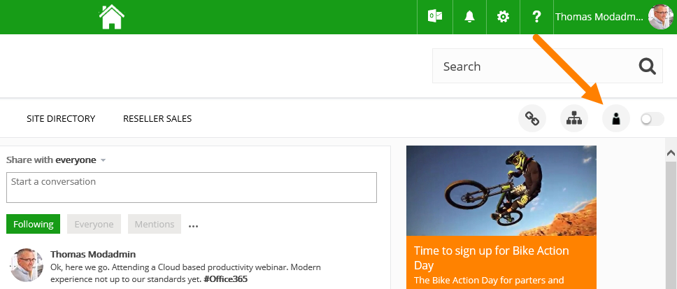

Follow these steps to browse to Omnia Admin:

Note that Omnia Admin is context sensitive. The left-hand navigation and available features may differ from site to site based on user permission and installed options.
Omnia Foundation Administration contains the following: